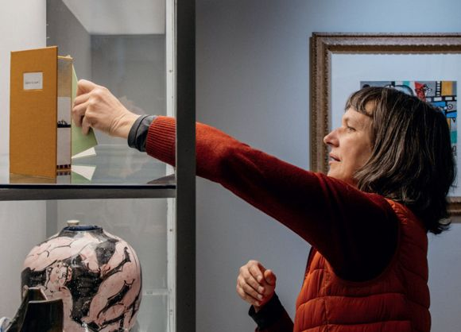

White Box #1: Intervalos, Museu do Caramulo
White Box #1: Intervalos
curadoria de José Maçãs de Carvalho
Museu do Caramulo
11 de abril – 18 de outubro 2026
A Coleção Montanha Mágica, cinco cadernos de campo feitos durante a residência artística White Box, foi apresentada nesta exposição e pertence agora à coleção do Museu do Caramulo.
The Magic Mountain Collection, five field notebooks made during the White Box artist residency, was shown in this exhibition and now belongs to the collection of the Museu do Caramulo.

